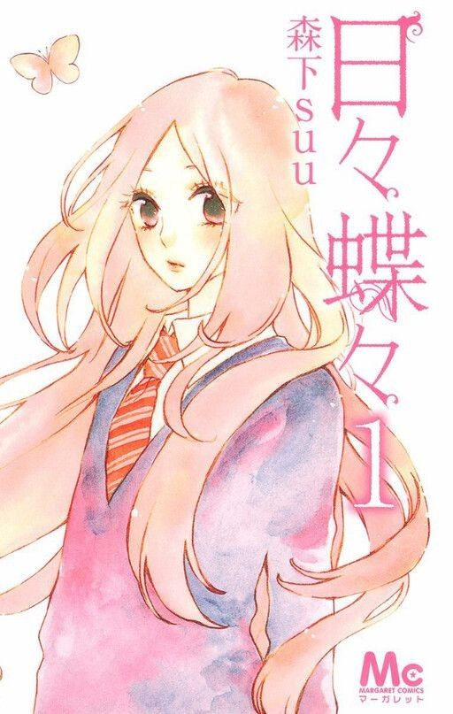

Apa Itu Shoujo Manga?
Shoujo dalam bahasa jepang merupakan arti dari remaja putri atau gadis, sedangkan Manga artinya komik. Shoujo Manga umumnya mengisahkan kisah cinta antara pasangan remaja, karena itulah target pembaca Shoujo Manga berusia sekitar 10-18 tahun. Tema yang diangkat pada Shoujo Manga biasanya adalah slice of life, romansa, sci-fi, bahkan juga fantasi. Melalui berbagai proses seleksi yang telah saya lakukan berdasarkan pada pengalaman saya dalam membaca shoujo manga, saya telah mengumpulkan 5 shoujo manga yang harus dibaca oleh penikmat shoujo manga.


1. Akagami No Shirayuki Hime
| Tahun Terbit | : | 2006 |
|---|---|---|
| Mangaka / Penulis | : | Sorata Akizuki |
| Status | : | Ongoing |
| Adaptasi Anime | : | Ada (2016) |
| Genre | : | Petualangan, Fantasi, Romansa, Drama |
Review Saya
Manga Akagami no Shirayuki-hime sudah ada sejak tahun 2006 dan telah diadaptasi menjadi animasi pada tahun 2016. Mengisahkan seorang gadis berambut merah bernama Shirayuki yang menjalani kehidupan dimasa mudanya dengan mengejar impiannya bahkan juga cintanya. Saya pribadi sangat menyukai karakter pemeran utama dalam manga ini, Shirayuki adalah seorang gadis yang pemberani dan sangat cerdas dalam mengatasi banyaknya permasalahan yang ada. Dengan dibaluri bumbu romansa yang manis antara Shirayuki dan Pangeran Zen, menjadikan daya tarik bagi penikmat kisah romansa berlatarkan
Preview Manga
Rekomendasi yang mirip Akagami No Shirayuki Hime
Akatsuki No Yona
| Tahun Terbit | : | 2009 |
|---|---|---|
| Mangaka / Penulis | : | Mizuho Kusanagi |
| Status | : | Ongoing |
| Adaptasi Anime | : | Ada (2014) |
| Genre | : | Petualangan, Fantasi, Romansa |
Kamisama Hajimemashita
| Tahun Terbit | : | 2008 |
|---|---|---|
| Mangaka / Penulis | : | Suzuki Julietta |
| Status | : | Completed |
| Adaptasi Anime | : | Ada (2012) |
| Genre | : | Supranatural, Fantasi, Romansa, Komedi |
Isekai ni Kyuuseishu to shite Yobaremashita ga, Around 30 ni wa Muri na no de, hissori Book Café Hajimemashita
| Tahun Terbit | : | 2019 |
|---|---|---|
| Mangaka / Penulis | : | Izumi, Kyouka, Sakurada, Reiko |
| Status | : | Completed |
| Adaptasi Anime | : | - |
| Genre | : | Fantasi, Romansa |
1. Hibi Chou Chou
| Tahun Terbit | : | 2014 |
|---|---|---|
| Mangaka / Penulis | : | Suu Morishita |
| Status | : | Completed |
| Adaptasi Anime | : | - |
| Genre | : | Kehidupan Sekolah, Romansa, Drama, Komedi |
Review Saya
Manga ini adalah manga yang sangat cocok untuk para pembaca yang menyukai pasangan kikuk dan kaku. "Hibi Chou Chou" mengisahkan tentang gadis remaja yang pemalu, bernama Suiren. Ketika memasuki bangku SMA, Sumire bertemu dengan seorang murid laki-laki bernama Kouhai. Sikap tidak acuh Kouhai (yang sebenarnya pemalu) membuat Suiren jatuh hati kepada Kouhai. Kisah cinta pasangan kikuk pun dimulai.
Preview Manga
Rekomendasi yang mirip Akagami No Shirayuki Hime
Hirunaka No Ryuusei
| Tahun Terbit | : | 2011 |
|---|---|---|
| Mangaka / Penulis | : | Yamamori Mika |
| Status | : | Completed |
| Adaptasi Anime | : | - |
| Genre | : | Romansa, Komedi, Kehidupan Sekolah |
Kimi Ni Todoke
| Tahun Terbit | : | 2005 |
|---|---|---|
| Mangaka / Penulis | : | Karuho Shiina |
| Status | : | Completed |
| Adaptasi Anime | : | Ada (2009) |
| Genre | : | Kehidupan Sekolah, Komedi, Romansa, Drama |
Hananoi-Kun To Koi No Yamai
| Tahun Terbit | : | 2018 |
|---|---|---|
| Mangaka / Penulis | : | Megumi Morino |
| Status | : | Ongoing |
| Adaptasi Anime | : | Ada (2024) |
| Genre | : | Romansa, Drama, Kehidupan Sekolah |
3. Strobe Edge
| Tahun Terbit | : | 2007 |
|---|---|---|
| Mangaka / Penulis | : | Io Sakisaka |
| Status | : | Completed |
| Adaptasi Anime | : | - |
| Genre | : | Kehidupan Sekolah, Romansa, Drama, Komedi |
Review Saya
Manga "Strobe Edge" mengisahkan tentang Ninako yang belum pernah mengalami jatuh cinta seumur hidupnya, sampai pada akhirnya Ia bertemu dengan Ren yang populer dan tampan. Seperti pada umumnya, manga karya Sakisaka Io yang selalu menggugah emosi para pembacanya akan banyak ditampilkan disini. Berbagai kesalahpahaman akan dilalui oleh kedua pasangan ini, untuk bisa menjalin hubungan yang baik dan sehat dalam melewati berbagai permasalahan.
Preview Manga
Rekomendasi yang mirip Akagami No Shirayuki Hime
Koi Wazurai Ellie
| Tahun Terbit | : | 2015 |
|---|---|---|
| Mangaka / Penulis | : | Momo Fuji |
| Status | : | Completed |
| Adaptasi Anime | : | - |
| Genre | : | Komedi, Kehidupan Sekolah, Romansa, Drama |
Tonari No Stella
| Tahun Terbit | : | 2022 |
|---|---|---|
| Mangaka / Penulis | : | Ammitsu |
| Status | : | Ongoing |
| Adaptasi Anime | : | - |
| Genre | : | Komedi, Romansa, Kehidupan Sekolah/td> |
Last Game
| Tahun Terbit | : | 2011 |
|---|---|---|
| Mangaka / Penulis | : | Shinobu Amano |
| Status | : | Completed |
| Adaptasi Anime | : | - |
| Genre | : | Kehidupan Sekolah, Komedi, Romansa, Drama |
4.Taiyou No Ie
| Tahun Terbit | : | 2010 |
|---|---|---|
| Mangaka / Penulis | : | Ta'amo |
| Status | : | Completed |
| Adaptasi Anime | : | - |
| Genre | : | Kehidupan Sekolah, Romansa, Drama, Komedi |
Review Saya
"Taiyou No Ie" merupakan salah satu manga yang pertama kali saya baca pada masa SMP. Manga ini adalah salah satu manga yang memiliki Age-gap antara anak SMA dan Pekerja Kantoran yang tak cukup jauh. Mengisahkan Mao, seorang gadis SMA yang merasa kesepian setelah kedua orangtuanya bercerai. Pada sisi lain Hiro yang merupakan teman masa kecil Mao, mengajak Mao untuk tinggal bersamanya karena Hiro sendiri pun telah kehilangan kedua orangtuanya dalam suatu kecelakaan. Bersama, mereka saling mendukung dan mengatasi trauma dan ketakutan satu sama lain. Saya sangat banyak menangis ketika membaca manga ini, trauma yang dialami kedua tokoh utama dan perjuangan untuk mengangkat dan menjaga satu sama lain sangat menyentuh.
Preview Manga
Rekomendasi yang mirip Taiyou No Ie
Tsubaki-chō Lonely Planet
| Tahun Terbit | : | 2015 |
|---|---|---|
| Mangaka / Penulis | : | Yamamori Mika |
| Status | : | Completed |
| Adaptasi Anime | : | - |
| Genre | : | Romansa, Drama, Komedi |
Hajimete Koibito Ga Dekimashita
| Tahun Terbit | : | 2022 |
|---|---|---|
| Mangaka / Penulis | : | Kamena Yuu |
| Status | : | Ongoing |
| Adaptasi Anime | : | - |
| Genre | : | Kehidupan Sekolah, Romansa, Komedi |
Living No Matsunaga-san
| Tahun Terbit | : | 2016 |
|---|---|---|
| Mangaka / Penulis | : | Keiko Iwashita |
| Status | : | Completed |
| Adaptasi Anime | : | - |
| Genre | : | Romansa, Drama, Komedi |
5. Gakko Gurashi!
| Tahun Terbit | : | 2014 |
|---|---|---|
| Mangaka / Penulis | : | Sadoru Chiba dan Norimitsu Kaihou |
| Status | : | Completed |
| Adaptasi Anime | : | Ada (2015) |
| Genre | : | Petualangan, Fantasi, Horror, Drama, Kehidupan Sekolah |
Review Saya
Manga "Gakko Gurashi!" telah diadaptasi menjadi animasi. Mengisahkan sekelompok anak SMA yang aktif dalam menjalankan suatu klub di sekolah. Karakter dari manga ini akan sangat menipu pembaca jika pembaca berfikir kalau ini adalah manga yang mengisahkan kehidupan "Normal" para gadis-gadis SMA. Jika pembaca menyukai kisah horror, saya sangat menyarankan untuk membaca manga ini.
Preview Manga
Rekomendasi yang mirip Gakko Gurashi!

Kinmoza!
| Tahun Terbit | : | 2010 |
|---|---|---|
| Mangaka / Penulis | : | Yui Hara |
| Status | : | Completed |
| Adaptasi Anime | : | Ada (2016) |
| Genre | : | Kehidupan Sekolah, Komedi |
Happy Sugar Life
| Tahun Terbit | : | 2015 |
|---|---|---|
| Mangaka / Penulis | : | Tomiyaki Kagisora |
| Status | : | Ongoing |
| Adaptasi Anime | : | Ada (2018) |
| Genre | : | Horror, Thriller |
Jigoku Shoujo
| Tahun Terbit | : | 2006 |
|---|---|---|
| Mangaka / Penulis | : | Kenichi Kanemaki |
| Status | : | Completed |
| Adaptasi Anime | : | Ada (2008) |
| Genre | : | Horror, Fantasi Gelap, Thriller, Supranatural |